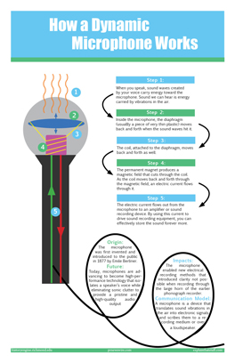

Infographic Project |
||
| Home - Video Project - Bookmark Project - Inforgraphic Project | ||
|
Purpose: Explore a communication technology and figure out its origin, how it works, its uses, impacts, and what its future might be. Then, create a visual presentation, like an infographic, showing how this technology fits into the communication model and helps us understand how it works. |
|
 |
How it works: The Microphone works because when you speak, the microphone picks up the energy from your voice in the form of sound waves. These waves cause a tiny diaphragm and a coil inside the microphone to move. As the coil moves through a magnetic field produced by a permanent magnet, it creates an electric current. This current is then sent to an amplifier or recording device, converting your voice into electricity. You can store the sound using this electricity or make it louder by amplifying it and sending it to a loudspeaker, transforming the electricity back into much louder sound. How it was Created: Initially, I sketched a thumbnail outlining the appearance of the infographic, plotting the placement of each component along with desired colors and font styles. Then I went on InDesign where I completed the entire graphic, which involved creating the microphone, its internal components, and all the accompanying text. I manipulated the shape and lines to create the specific parts. I used explainthatstuff.com to explain how the microphone works. |
|
© 2023 Hannah R. Farmer |
||